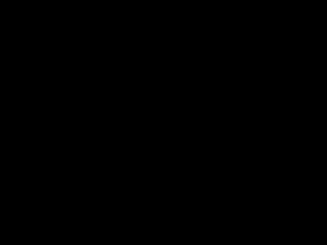

Portal Defender
This was a solo project, built from scratch using assets I found online. The core mechanics were created using Euler calculations. I had also created animations being triggered by registering collisions. Randomly spawned enemies and powerups in different locations of the map. UI system displaying player information was also created.

Gameplay
- Implemented the core mechanics of the game using Euler calculations. Core gameplay loop was designed and implemented from scratch.
- Implementing the core gravity mechanism was the biggest hurdle while creating the game. I had to figure out a way to allow the player to navigate around the blackhole while simultaneously being drawn in by it.
- I acomplished this by tying the vertical input to the radius and the horizontal input to the angle of rotation.
- At the same time, the player would be pulled towards the blackhole, if the computer does not register any input. This causes the player to revolve around the black hole in an elliptical orbit as they slowlet get closer. The force of gravity gets stronger the closeer they are to the blackhole.
- The system incorporates user input for horizontal and vertical movement, dynamically adjusts the object's position in polar coordinates (radius and angle), and simulates gravitational forces based on a specified attractor (referred to as a black hole). The angle is normalized, and the object's position and rotation are updated accordingly. Additionally, the code includes safeguards to clamp the object's position within specified bounds, ensuring a controlled and engaging user experience.

- Procedurally generated three types of enemies and two different power ups to spawn in different locations of the map. Increased difficulty of enemies as game goes on.
- Since I was the designer of this game, I had to figure out what type of enemies I wanted to include. I decided to go with a simple obstacle-type (asteroid) an enemy shooter and a follow enemy. Coding their movements was tricky as I had to spawn them randomly and move them similar to the player.
- I accomplished this by first creating a "spawn field" of some sort. I had min and max x coordinate values and the position of the enemy spawning would be based on a random number from within the range. The enemies would also spawn randomly based on a random number.
- The enemy asteroid was simple enough to code, but the shooter was a bit more complex. I had planned for the shooter to pause around the blackhole and create a ring of defense. This was acoomplished by fixing the enemy shooter radius once it reached a certain limit. I then reversed the asset and invoked a new StartShootingReverse() function, which changed the direction of the projectile.
- The enemy follow was a bit tricker than that. I first calculated the position of the enemy in relation to the player. I set the rotation of the enemy to face the player. In SetPosition(), I make the enemy move in the direction it is facing by using rigidBody.MovePosition(position)

- implemented a screenshake in order to convey player damage.
- This was done by creating an observer pattern where external scripts can subscribe to the Static Shake Event and invoke it whenever necessary (during damage). The shake was implemented by tweening the camera’s position and rotation values between a range
- Particle effects were created for many player interactions. They were triggered collisions.
- Developed a UI system for the game which includes an options menu and player stats.
- Options menu included audio, SFX and resolution settings.
Rotational Mechanics and Player Controller
Enemy AI Programming
Camera Programming
Particle Animation and UI/UX Programming
- © Untitled
- Design: HTML5 UP